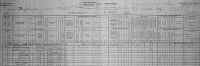

|
THE FAMILY OF CHARLES CONSIGNY
|
Charles's
parents, Arsène Consigny and Amanda Thibaudeau,
married on July 31, 1888, in Quebec City, in the church of
Saint-Roch parish. They were born there,
Arsène on October 14, 1865, and Amanda on February 2, 1862, and they
would spend their whole lives there. Saint-Roch was then the most
important parish in the city and a bustling working-class district. Amanda
and Arsène could read and write and signed their marriage record, as did
their witnesses, which was exceptional for the time. The day before the
wedding they signed a marriage contract before the notaire (notary) Louis Leclerc.

The signatures at the bottom of the marriage record
|

St-Roch church in Arsène and Amanda's time.
The present church was built starting in 1914.
|
Crescence,
their
first child, was born on April 5, 1889. Her godfather was
Jean-Baptiste Thibaudeau and her godmother Aglaé Dulac dit Bonhomme, her
maternal grandparents. On May 9, 1910, she married Rolland Pleau, a
cousin of Ézilda Côté, since their mothers were sisters. The couple had a
son, Fernand, and several daughters. Crescence
was buried on August 8, 1947, in lot K-39 in the old section of
St-Charles cemetery, rue St-Vallier ouest. Widowed, Rolland remarried in
1950.
In 1914
Charles gave Crescence's name as a reference on his attestation
paper for the First World War; she was then living at 28 rue
Saint-Léon in Quebec City, in the Saint-Sauveur district. Charles's
children kept in touch from afar with their Pleau cousins and
visited them when they went up to Quebec City now and then.
Arsène, was born on November 21, 1890. His godfather
was Nicolas Consigny, the child's uncle, and his godmother Marcelline
Chantal, Nicolas's wife. This couple also lived in St-Roch and had many
children. Arsène died on August 22, 1891, at nine months.
Anatole, was born on February 22, 1892. His
godfather was Ephrem L'Heureux and his godmother Philomène Thibaudeau, his
wife and the child's aunt. Anatole died on February 16, 1893, at
one year old.
Charles-Eugène
and Arsène-Ivanhoé,
twins,
were born on February 28, 1893. Charles's godparents were Charles Noreau, a bookkeeper, and Georgiana
Thibaudeau, his wife and the child's aunt. Arsène-Ivanhoé's godfather
was Ivanhoé Caron, a merchant, and his godmother Emma Thibaudeau, his
wife and the child's aunt.
Charles-Eugène is our grandfather. As for his twin, he died
on September 19, 1896, and was buried the same day. He was three and a
half. Francine remembers hearing that the little boy died
after being kicked by a horse.
Philippe, was born on April 15, 1894. His godfather
was Philippe Dion, the child's uncle, and his godmother Anne Consigny, his
wife. They were the child's uncle and aunt and also lived in
Saint-Roch. Philippe died on July 30, 1894, in Charlesbourg, at
three and a half months.
Lucienne, was born on April 8, 1895. Her godfather
was Philippe Goudreault, a mechanic and the child's uncle, and her
godmother his wife, Malvina Thibaudeau. Lucienne died on July
10, 1895, at three months.
Antoine, was born on August 18, 1896. His godfather
was Edmond Consigny, the child's cousin, and his godmother Marie-Blanche
Thibaudeau, the child's aunt. On the baptism record, his grandfather, Jean-Baptiste
Thibaudeau, stood in for the late father.
Antoine married Ernestine Leroux on November
17, 1920, in Montreal, in Très-Saint-Nom-de-Jésus parish.
Like his brother Charles, he lived and raised his children in the
Maisonneuve district. He worked as a machinist at American Can
(corner of Pie IX and Ontario). Later he got his niece
Jacqueline a job there, and she was still working there in the first months of her marriage.
The tragic
death of Arsène
Consigny.
A mechanic-machinist, Arsène worked as foreman in the
machine shop of his older brother Nicolas, on rue St-Joseph in the
St-Roch district. The shop had a good reputation and was
much in demand among the many boot and shoe factories of the
St-Roch district.
On March 14, 1893, the two brothers and a partner had obtained
a federal patent, number CA 42294, for a
"wire for making pegs", a piece of
equipment that improved shoemaking machines.
 On
the afternoon of February 26, 1896, Arsène died
at the age of 31.
While experimenting with acetylene gas, a
brand-new product on the market, the
two brothers caused a violent explosion that cost
Arsène his life, seriously injured Nicolas and shook the neighbourhood. The
two brothers were not new at this, for the
month before, a minor explosion had already occurred.
The newspaper L'Électeur of February 27, 1896, published a long article
on "What acetylene is". Here are some extracts:
" The accident that happened yesterday at the Consigny establishment makes
acetylene more topical than ever in Quebec City, the new
gas that may be destined to dethrone electricity for
lighting, and even motive power, thanks to its low cost of
manufacture. Mr. Consigny is the first in Quebec City to have tried
to use this new gas. With the dynamo he uses to
light his factory, Mr. N. Consigny succeeded in making his
own carbide....." On
the afternoon of February 26, 1896, Arsène died
at the age of 31.
While experimenting with acetylene gas, a
brand-new product on the market, the
two brothers caused a violent explosion that cost
Arsène his life, seriously injured Nicolas and shook the neighbourhood. The
two brothers were not new at this, for the
month before, a minor explosion had already occurred.
The newspaper L'Électeur of February 27, 1896, published a long article
on "What acetylene is". Here are some extracts:
" The accident that happened yesterday at the Consigny establishment makes
acetylene more topical than ever in Quebec City, the new
gas that may be destined to dethrone electricity for
lighting, and even motive power, thanks to its low cost of
manufacture. Mr. Consigny is the first in Quebec City to have tried
to use this new gas. With the dynamo he uses to
light his factory, Mr. N. Consigny succeeded in making his
own carbide....."
The inquest by
Coroner Belleau concluded, on the following March 3, that the
cause of Arsène's death was "a cerebral concussion caused
accidentally by a jet of acetylene gas compressed at high
pressure, which penetrated and drove the right orbit into the
brain matter, while the deceased was carrying out
tests to liquefy the said gas".
Arsène's
wife, Amanda, was pregnant. 1896 was a hard year for
Amanda: she lost her husband in February, gave birth to her last
child in August and lost one of her twins in September. |
|
Extract from the newspaper L'Électeur
of February 26, 1896:
TERRIBLE ACCIDENT IN ST-ROCH,
A MAN KILLED
while experimenting with the new gas Acetylene
As we go to press, our fermier (route agent) Mr. Eugène
Leclerc telephones us that a terrible accident has just happened in
St-Roch.
Mr. Nicolas
Consigny, a very skilful mechanic, always on the lookout for
new things, had been trying for some time to use the new
power known as Acetylene.
A
few weeks ago, during the Carnival in fact, an explosion
occurred while testing his experiments at the Consigny factory. That
time they got off with a few broken windows and a
panic among the employees, quickly brought under control.
Mr. Consigny,
a stubborn man, did not let himself be discouraged and went on with his
experiments.
Unfortunately, whether for want of the necessary knowledge or of the
necessary precautions, a more serious accident happened at 2:10
this afternoon.
The
owner of the factory, located on rue St-Joseph, next
door to Messrs. Gauthier & Frère, Mr. Nicolas Consigny,
was working in a separate room with his brother, Mr. Arsène
Consigny, to find some cheaper way of running
the machine.
Suddenly
a terrible explosion went off and threw the employees
into a panic. People rushed in and found the two brothers
lying on the floor, unconscious.
Mr. Jos.
Côté, a tobacco merchant who happened to be there, hurried to
telephone for a priest and a doctor.
Father H.
Bernier, of the St-Roch presbytery, came at once. Mr. Arsène
Consigny was already dead.
Mr. Nicolas Consigny
regained consciousness soon afterwards. We are pleased to learn that he
is considered out of danger.
Death notice from the newspaper
L'Électeur of February 27, 1896:
CONSIGNY - On the 26th of this month, at
the age of 31, sieur Arsène Consigny, mechanic, husband of
Amanda Thibaudeau. He leaves to mourn his loss an
inconsolable wife and three young children.
The funeral will take place on Saturday the 29th of this month at 8
a.m.
The funeral procession will leave his residence, no. 179 rue du Roi, at 7:45
for St-Roch church, and from there to St-Charles cemetery.
Relatives and friends are asked to attend, as are the members
of the St-Roch congregation, the members of the Ligue de St-Roch and
of the St-Sauveur and St-Jean-Baptiste Unions. |
Widowed,
Amanda Consigny went back to live with her parents, with her children, at 41 Ste-Hélène,
still in the St-Roch district. Her father, Jean-Baptiste Thibaudeau,
was a well-known fruit merchant whose business was at 21 St-Pierre, in the Lower Town.
He died in 1900.(these
addresses are taken from the Cherrier directory of Quebec City streets published
in 1886; I have assumed here that they were still valid ten years
later)
|
1901 census
(original form)

There are several anomalies
in this document. The census was taken in March 1901. It
lists J.B. Thibodeau as head of the family. Yet he
had died nearly a year earlier. Told of his mistake, the
enumerator crossed out the name, but did not correct the status of his
widow. He also left blank the surnames of the last six
people listed, implying that they are
all Consignys.
It should read instead:
| Dulac dit Bonhomme Aglaé |
Head |
Widow |
| Consigny Amanda |
daughter |
Widow |
| Thibaudeau Aglaé |
daughter |
single |
| Thibaudeau Blanche |
daughter |
single |
| Thibaudeau Fabiola |
daughter |
single |
| Consigny Crescence |
granddaughter |
single |
| Consigny Charles-Eugène |
grandson |
single |
| Consigny Antoine |
grandson |
single |
|
This census also tells us
that Amanda had an annual income of $1,500 (column 26: wages
from an occupation or trade). Did Amanda
work in a factory or a big store in the neighbourhood?
Or did she have an annuity that the enumerator entered in the wrong
column? We also learn that Crescence and Charles went to
school 10 months a year. Amanda's three single sisters
surely worked, but this is not mentioned.
Amanda Thibaudeau died on July 6, 1907,
at the age of forty-five. She was buried in the Saint-Charles cemetery in Quebec City.
She is said to be in the Thibaudeau lot, C-35 532.
(this is verbal information from
the receptionist at St-Charles cemetery. I am not allowed access to the documents,
since I am not the lot holder)
|
 AT THE
CONSIGNYS'
AT THE
CONSIGNYS'